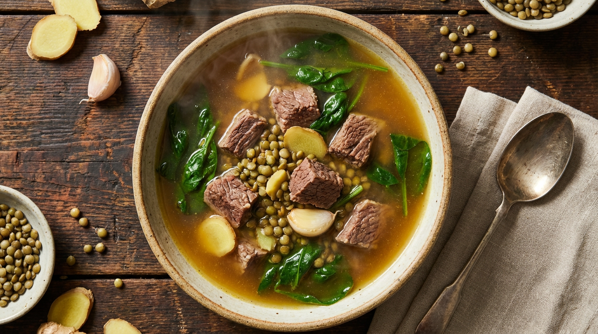
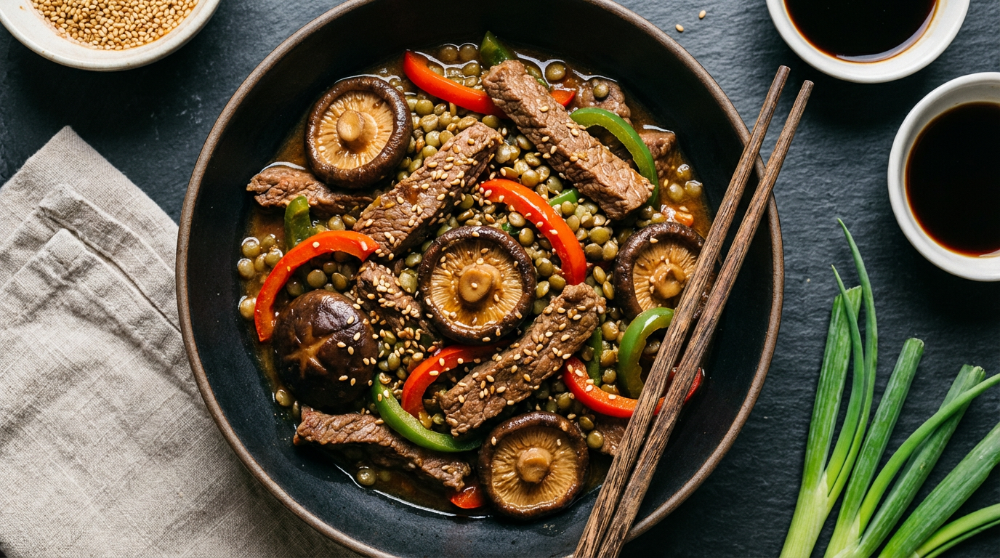
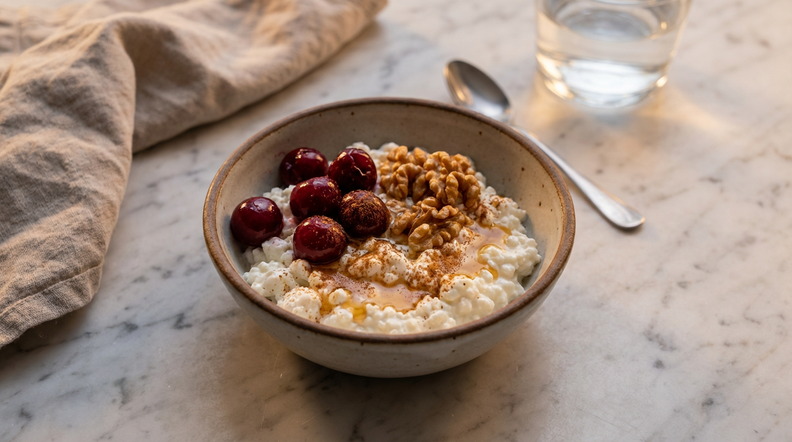
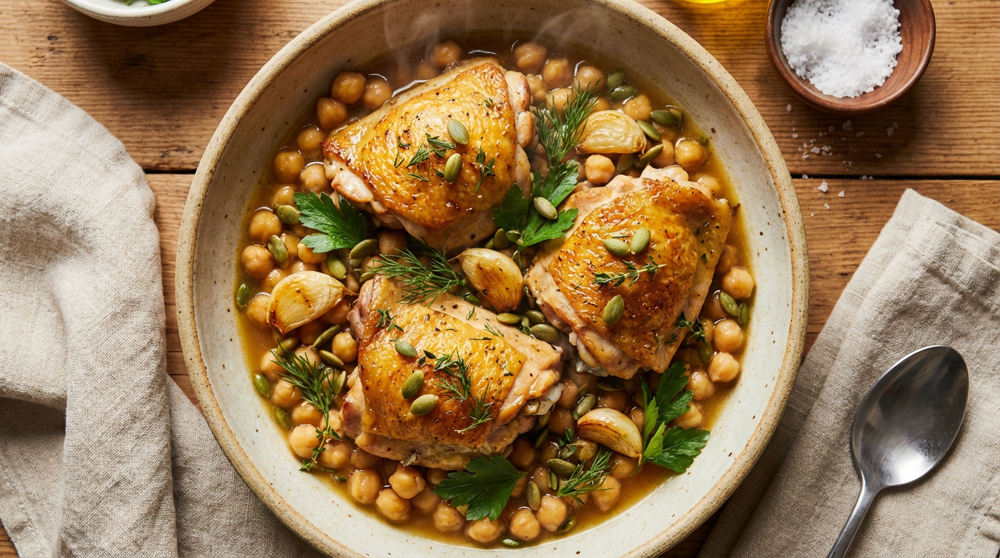
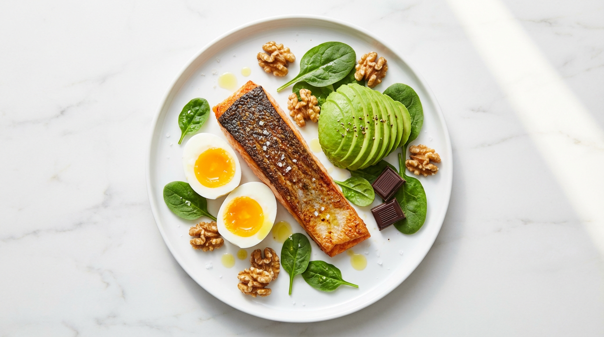

1) The Ignite — GLP‑1 Support
Targets appetite support and balanced energy through protein + fiber.
Chicken, black beans, barley, avocado, chia.
Protein: 42g · Fiber: 14g
Allergens: none · GF option available

2) The Cleanse — Gut Support
Focuses on bone broth, greens, and lentils for gut-friendly nutrients.
Bone broth, beef, spinach, lentils, ginger, garlic.
Protein: 38g · Fiber: 11g
Allergens: none · GF/DF

3) The Glow — Collagen Support
Rich in vitamin C, omega‑3s, and collagen-building nutrients.
Salmon, spinach, bell peppers, berries, walnuts.
Protein: 40g · Fiber: 6g
Allergens: fish, tree nuts

4) The Recovery — Performance Support
Supports muscle recovery with lean protein and anti‑inflammatory foods.
Chicken, quinoa, kale, turmeric, ginger, pumpkin seeds.
Protein: 48g · Fiber: 9g
Allergens: none · GF/DF

5) The Shield — Antioxidant Support
Focuses on copper- and polyphenol-rich foods for overall resilience.
Beef, shiitake mushrooms, lentils, sesame, bell peppers.
Protein: 44g · Fiber: 12g
Allergens: sesame

6) The Overnight — Sleep Support
Balanced evening protein and calming nutrients for recovery routines.
Cottage cheese, walnuts, tart cherries, cinnamon, honey.
Protein: 32g · Fiber: 3g
Allergens: dairy, tree nuts

7) The Cellular Boost — NAD+ Support
Focused on energy and cellular support with lean fish and greens.
Tuna, broccoli, edamame, avocado, cucumber, sesame soy glaze.
Protein: 44g · Fiber: 10g
Allergens: fish, soy, sesame

8) Hormone Balance — Daily Support
Protein + fiber with herbs for consistent daily nutrition.
Bone broth, chicken thighs, chickpeas, garlic, pumpkin seeds.
Protein: 46g · Fiber: 8g
Allergens: none · GF option available

9) The Brain + Body — Mitochondrial Support
Omega‑3s and antioxidant-rich foods for focus and recovery.
Sardines or salmon, broccoli, blueberries, cauliflower, quinoa.
Protein: 40g · Fiber: 11g
Allergens: fish

10) The Focus — Cognitive Support
Nutrient-dense fats and proteins for mental clarity.
Salmon, eggs, avocado, walnuts, spinach, dark chocolate.
Protein: 42g · Fiber: 7g
Allergens: fish, eggs, tree nuts
Take a quick assessment and we’ll recommend the right starting point for your goals and lifestyle.
Get My Food-First Plan